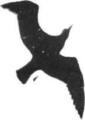

Jonathan Uzak Kayalar üzerinde çevresini gözleyerek ağır ağır dönüyordu. Bu genç ve acemi Martı Fleteher mükemmel bir uçuş öğrencisine benziyordu. Havada güçlü, hafif ve çevikti ama çok daha önemlisi, öğrenme isteğiyle yanıp tutuşuyordu.
Geliyordu işte! Pikeden bulanık, gri şekilli bir şimşek gibi çıkıyor ve saatte yüzelli mil hızla eğitmenini bir anda geride bırakıyordu. Onaltı sayışlı dik-yavaş tonoyu bir kez daha denemeye girişti hemen, yüksek sesle sayıyordu.
"... sekiz ... dokuz ... on ... görüyormusun Jonathan, hız yitiriyorum ... onbir ... seninki-gibi-güzel-keskin-duruşlar-istiyorum-oniki... lanet-olsun-yine-olmadı ... onüç ... şu-son-üç-sayı-yok mu ... onlarsız ... ondöö ... aaakh!"
Başarısızlık karşısında duyduğu korku ve öfke Fletcher'in tepedeki düşüşünü büsbütün beter etti. Şiddetle ters döndü. Yalpalayarak başaşağı kurşun gibi düşmeye başladı. Eğitmenin otuz metre alında, soluk soluğa durabildi ancak.
"Benimle zaman yitiriyorsun Jonathan! Geri zekalının biriyim ben! Aptalım! Uğraşıyorum, didiniyorum, ama asla başaramayacağım!"
Martı Jonathan ona bakıp başını salladı. "Böyle sert çıkışlarla başlarsan başaramazsın asla. Daha başlangıçta saatte kırk mil hız yitirdin! Yumuşak olmak zorundasın. Kararlı fakat yumuşak, unutma!"
Genç martının yanına indi. "Birlikte deneyelim şimdi, yanyana. Çıkışa dikkat et. Yumuşak, kolay bir giriş, tamam mı?"
Üçüncü ayın sonunda Jonathan'ın altı öğrencisi daha vardı. Dışlanmış martılardı tümü de. Bu yeni uçuş fikrini, uçuş zevki için uçmayı merak eden martılar.
Yine de, yetkinlik denemelerine girişmeleri, bunun ardında yatan felsefeyi anlamalarından daha kolay oluyordu.
"Gerçekte her birimiz, Yüce Martı düşüncesinin, sınırsız özgürlüğün ta kendisiyiz. Uçuş yetkinliği, özümüzü dile getirmeye doğru bir adımdır. Bizi sınırlayan her şeye karşı çıkmalıyız. Yüksek hız denemeleri, yavaş uçuşlar, hava akrobasisi, bunların tümünün amacı sınırları yıkmaktadır." Jonathan akşamları kumsalda böyle eğitiyordu öğrencilerini.
... ve, gün boyu uçmaktan yorulan öğrencilerin uykusu gelirdi. Pratiği seviyorlardı, çünkü hızlıydı, heyecan vericiydi ve her dersle artan bir öğrenme açlığını doyuruyordu. Ama hiçbiri, Martı Fletcher Lynd bile uçuş teorisinin, tüylerin ve rüzgârın uçuşu kadar gerçek olabileceğini kavrayamıyorlardı.
Bazen de şöyle derdi Jonathan onlara: "Kanat-ucunuzdan kanatucunuza bedeninizin tümü, aslında düşüncenizin somutlaşmış biçimidir. Düşüncelerinize vurulan zinciri kırın, göreceksiniz ki bedeniniz de zincirlerini koparıp atacaktır..." Ama nasıl söylerse söylesin, hoş bir hayal gibi geliyordu bu sözler genç martılara ve iyice uyku çöküyordu üzerlerine.
Sürüye dönme zamanlarının geldiğini söylemek için bir ay daha bekledi Jonathan.
"Hazır değiliz!" diye karşı çıktı Martı Henry Calvin. "Bize hoşgeldin diyecek halleri yok! Dışlanmışız biz! İstenmediğimiz yere zorla girmeye çalışanlayız ya!"
"İstediğimiz yere gitmekte ve istediğimiz şeyi olmakta özgürüz" diye yanıtladı Jonathan. Kumlar üzerinden havalanarak doğuya, Sürünün yaşadığı yere doğru uçmaya başladı.
Bir tedirginlik sardı öğrencileri. Sürü Yasası der ki, dışlanmış olan asla geri dönmez ve onbin yıldır bir kez olsun bozulmamıştı bu yasa. Yasa, gitmeyin, kalın diye buyuruyor, Jonathan gidin diyordu; ve şimdiden bir mil uzaklaşmıştı bile. Daha uzun süre bekleyecek olurlarsa, düşman bir sürüyle tek başına karşılaşacaktı.
"Eh, sürünün bir parçası olmadığımıza göre, yasaya uymak zorunda değiliz, ne dersiniz?" Fletcher'in sesi kaygılıydı. "Ayrıca bir kavga verilecekse, orada, burada olduğumuzdan daha fazla işe yararız."
Ve böylece, o sabah batıdan sekiz martı geldi. Kanatuçları adeta birbirine değerek çifte halka yapmışlardı. Sürünün Kurultay Toplantısı yaptığı kıyıya saatte yüzotuzbeş mil hızla vardıklarında, Jonathan en öndeydi, sağ kanatucunda rahatça uçan Fletcher, solda onlara uymak için çaba harcayan Henry Calvin. Sonra hepsi birlikte sağa kaydılar, tek bir kuş gibi ... aynı hizadalar ... ters döndüler ... aynı hizadalar ... ve rüzgâr yalayıp geçiyor onları.
Sürünün günlük yaşamı, bağırış çağırışları bir anda kesildi. Gökten inen dev bir bıçaktı sanki bu sekizli ve sekizbin martı gözü, kıpırtısız, onları gözlüyordu. Sekiz kuşun herbiri havada keskin birer takla attıktan sonra geniş bir dönüş yaparak kumların üzerine bir anda iniverdiler. Ve sonra, sanki bu hergünlük bir olaymışçasına, Jonathan uçuşun eleştirisine girişti.
"Herşeyden önce" dedi keyifsiz bir gülüşle, "havada birleşirken biraz geciktiniz."
Sürüde sanki şimşek çaktı. Bunlar dışlanmış kuşlar! Ve geri gelmişler! Ve bu ... bu olamaz! Fletcher'in kavga beklentisi, Sürünün şaşkınlığı arasında eriyip gitti.
"Pekala, dışlanmış olabilirler", dedi genç martılardan bazıları. "Ama böyle uçmayı nerede öğrenmişler, söylesenize?"
Başkanın buyruğu ancak bir saate yakın bir süre sonra yayılabildi süreye: "Aldırmayın onlara!
Dışlanmış biriyle konuşan da kendini dışlanmış bilsin. Başını çevirip bir dışlanmışa bakan bile Sürü Yasasını çiğnemiş sayılır."
O andan itibaren, tüm sürü gri tüylü sırtlarını donuverdi Jonathan'a, fakat o farketmemiş göründü. Uçuş derslerini Kurultay Kumsalında sürdürdü ve ilk kez, öğrencilerinin yeteneklerini son sınırına kadar zorladı.
"Martı Martin!" diye bağırdı gökyüzünü çınlatarak. "Alçak hız uçuşunu bildiğini söylüyorsun. Kanıtlayana kadar hiçbir şey biliyor sayılmazsın. Göster bakalım. UÇ!"
Ve böylece minik martı Martin William, eğitmeninin hısımına uğramış olmanın dehşetiyle, kendini bile şaşırtarak alçak-hız uçuşunda harikalar yarattı. Kendini kaldırabileceği en hafif esintiyle ve bir kez olsun kanadını çırpmaksızm, kumlardan bulutlara kadar havalandı ve yere indi.
Martı Charles-Roland ise Büyük Dağ Rüzgârını yakalayıp sekizbin metreye tırmandı. Soğuktan morarmış olarak ama şaşkın ve mutlu, ertesi gün daha bile yükseğe çıkma kararıyla geri geldi.
Hava akrobasisini herkesten çok seven Martı Fletcher onaltı sayışlı dik-yavaş tonosunu zaferle" tamamladı ve ertesi gün üçlü taklayla kendini aştı. Tüylerinden yansıyan güneş, kumsalda gizlice onu izleyen ve sayıları hiç de az olmayan martıların gözünü aldı.
Jonathan her an öğrencilerinin yanındaydı. Gösteriyor, öneriyor, yönlendiriyor ve zorluyordu.
Gece demeden, bulutlara, fırtınalara aldırmadan keyifle uçuyordu öğrencileriyle, üstelik kumsaldaki martılar umarsızlık içinde birbirlerine sokulup dururlarken.

Uçuş sonrası, öğrenciler kumsalda toplanırdı. Giderek Jonathan'ı daha dikkatle dinlemeye başladılar. Anlayamadıkları bazı çılgın fikirler ileri sürüyordu, gelgeldim, anlayabildikleri güzel fikirlere ne demeli?
Derken, öğrenci halkasını başka bir halka çevrelemeye başladı geceleri - koyu karanlıkta sonuna kadar dinleyen ama birbirlerine görünmek istemeyen gündoğumundan önce kaybolup giden meraklı martıların oluşturduğu bir halka.
Bir ay geçmişti Dönüş'ün üzerinden. İlk kez sürüden bir martı sınırı aştı ve uçmayı öğrenmek istediğini söyledi. Sorar sormaz da, Martı Terrence ewell lanetlendi; dışlanmış damgası yedi, ve Jonathan'ın sekizinci öğrencisi oldu.
Sonraki gece, Martı Kirk Maynard koptu sürüden. Kumsalda sendeleye sendeleye, sol kanadını sürükleyerek geldi ve Jonathan'ın ayakları dibine yığılıp kaldı. "Yardım et bana." Son nefesini veren biri gibi usulca konuşuyordu. "Dünyada herşeyden çok uçmayı istiyorum."
"Gel öyleyse", dedi Jonathan. "Yüksel benimle birlikte, hadi başlayalım."
"Anlamıyorsun. Kanadım. Kanadımı kıpırdamıyorum."
"Martı Maynard, kendin olma, gerçek kimliğini bulma özgürlüğüne sahipsin, burada ve şu anda, ve hiçbir şey engelleyemez seni. Yüce Martı Yasası, var olan tek yasa budur."
"Yani uçabileceğimi mi söylüyorsun?"
"Özgürsün diyorum."
İşte öylesine kolayca ve çabucak, Martı Kirk Maynard kanatlarını açtı ve hiç zorlanmadan gece karanlığında havalandı. Tüm sürü, onun yüzelli-ikiyüz metre yüksekten, sesinin son perdesinde kopardığı çığlıklarla uyandı: "Uçabiliyorum! Bakın! UÇABİLİYORUM!"
Gündoğumunda, öğrenciler halkasının çevresinde bine yakın kuş toplanmış, merakla Maynard'ı süzüyorlardı. Görülüp görülmediklerine aldırmıyorlardı bile. Dinliyorlardı, Martı Jonathan'ı anlamaya çalışıyorlardı.
Çok yalın şeylerden söz ediyordu Jonathan: Uçmak bir martının doğal hakkıdır, özgürlük varlığının özündedir. İster boş inançlar ve gelenekler, isterse sınırlamanın herhangi bir biçimi, özgürlüğü kısıtlayan ne varsa kaldırıp atılmalıdır."
"Kaldırıp atılmalı mıdır?" diye bir ses yükseldi kalabalıktan. "Bu sürü yasası olsa bile mi?"
"Tek gerçek yasa, özgürlüğe gidendir. Başka yasa yoktur."
"Senin gibi uçmamızı nasıl bekleyebilirsin?" dedi bir başka ses. "Sen özelsin, ayrıcalıklı ve kutsalsın, öteki kuşlardan farklısın."
"Fletcher'e bakın! Ya Lowell? Charles Roland? Onlar da özel, ayrıcalıklı ve kutsal mı? Ne sizden üstün onlar, ne de benden. Tek fark, inanın tek fark, gerçek özlerinin bilincine varmaya ve bunu hayata geçirmeye başlamış olmalarıdır."
Flatcher dışındaki öğrenciler tedirgince kıpır-ındılar. Şimdiye dek anlayamamışlardı yaptıklarının bu olduğunu.
Kalabalık her gün biraz daha arttı. Kimi sorgulamaya, kimi putlaştırıp yüceltmeye geliyor, kimi çatıyordu onlara.
Bir sabah, ileri Hız Eğitimi sonrası, Fletcher Jonathan'a şöyle dedi: "Sürüde, senin ya Yüce Martının kendi oğlu olduğun ya da zamanımızın bin yıl ilerisinde yaşadığın söyleniyor."
İçini çekti Jonathan. Yanlış anlaşılmanın belli, diye düşündü. Sana ya Tanrı derler, ya da yalancı. "Sen ne düşünüyorsun Fletcher, zamanızın ilerisinde miyiz?"
Uzun bir sessizlik. "Doğrusunu istersen, bu tür kuş, onu keşfetmek isteyenler için hep vardı, elinizin altındaydı; bunun zamanla ilgisi yok. Alışılmışın ötesindeyiz, belki. Çoğu martıların uçuş biçiminin ilerisinde."
"Bu da birşey" dedi Jonathan, başaşağı süzülürken. "Zamanımızın ötesinde olma düşüncesinden daha iyi en azından."
Olay bir hafta sonra oldu. Fletcher, yeni öğrencilerden oluşan bir kümeye yüksek-hız uçuşunu gösteriyordu. İkibinbeşyüz metreden yaptığı dalışı henüz tamamlamış, kumsalın on santim üzerinde uzun, gri bir iz gibi kayıp gidiyordu ki, ilk uçuşunu yapan gencecik bir kuş anasını çağırarak tam yolunun üzerine çıkıverdi. Martı Fletcher, yavruya çarpmamak için, saniyenin onda biri gibi kısa bir süre içinde sola doğru sert bir dönüş yaptı. Ve, saatte ikiyüz milden fazla bir hızla kayalara, granit kayalara...
Kaya, bambaşka bir dünyaya açılan kocaman, sert bir kapıydı sanki. Çarptığı anda bir patlama; korku, şok, karanlık ... sonra, tuhaf, çok tuhaf bir gökyüzünde süzülmek ... Unutmak, anımsamak, unutmak; korku, üzüntü, pişmanlık, müthiş bir pişmanlık.
Martı Jonathan Livingston ile ilk karşılaştığı gün duyduğu ses yine geldi.
"İşin sırrı, Fletcher, sınırlarımızı sırasıyla ve sabırla aşmaya çalışmaktır. Programımızın daha ileri aşamalarına ulaşmadan kayaların içinden uçamayız."
"Jonathan!"
"aynı zamanda Yüce Martı'nın oğlu olarak da bilinir!" diye yanıtladı eğitmeni, inceden inceye alay ederek.
"Senin ne işin var burada? Kayalar ... Ben ... Ölmemiş miydim? ... Ölmedim mi?"
"Hadi canım, böyle yapma Fletch! Düşün. Benle şu anda konuşabildiğine göre, ölmediğin apaçık ortada, değil mi? Senin yapmayı becerebildiğin, biraz ani olmakla birlikte, bilinç düzeyini yükseltivermekti. Şimdi seçim senin. Burada kalabilir ve bu düzeyde öğrenmeyi sürdürebilirsin ki, geride bıraktığından hayli ileri bir düzey bu ya da geri dönüp sürüyle birlikte çalışabilirsin. Yaşlılar bu tür bir felaketi bekleyip duruyorlardı zaten ama onları bu denli sevindirmene kendileri bile şaştılar."
'Elbette sürüye geri dönmek istiyorum. Yeni yeni başlamıştım öğrencilerimle çalışmaya."
"Çok iyi Fletcher. Unutma ki, bedenin düşüncenin somut biçiminden başka bir şey değildir."
Fletcher başını salladı, kanatlarını gerdi ve gözlerini açtığında kayanın dibindeydi. Tüm sürü toplanmıştı ve tam ortalarında buluverdi kendini. Kıpırdadığı anda büyük bir çığlık koptu martılardan.
"Yaşıyor! Ölmüş olan yaşıyor!"
"Kanatucuyla dokundu, can verdi ona! Yüce Martının Oğlu."
"Hayır! O bunu yadsıyor! Şeytanın ta kendisi o! ŞEYTAN! Sürüye dağıtmaya geldi!"
Olup bitenlerden dehşete düşmüş dörtbin martı ... ve bir çığlık: ŞEYTAN! Çığlık okyanus kasırgası gibi sarstı martıları, fırtına gibi dolandı sürüyü. Ve atıldılar, parlak gözlerle, sipsivri gagalarla parçalamak için atıldılar.
Jonathan sordu: "Ne dersin Fletcher, uzaklaşsak daha mı iyi olacak acaba?"
"İşte buna fazlaca karşı çıkacağımı sanmıyorum..."
Anında bin metre ötedeydiler ve linç grubunun bilenmiş gagalan boşlukta buldu kendilerini.
"Nedendir", diye sordu Jonathan şaşkınlıkla. "Dünyada en zor şey neden bir kuşu özgür olduğuna ikna etmektir? Oysa kendisi kısa bir pratikle bunu kendi kendine kanıtlayabilir! Neden bu kadar zor?"
Fletcher bu ani değişiklik nedeniyle hâlâ gözlerini kırpıştırıyordu. "Ne yaptın az önce? Nasıf geldik buraya?"
"Linçten kurtulmak istediğini söyledin, söylemedin mi?"
"Evet! Ama sen nasıl..."
"Herşeygibi, Fletcher. Pratik."
Sabah olduğunda sürü çılgınlığını unutmuştu ama Fletcher unutmadı. "Jonathan, bir zamanlar söylediğini anımsıyor musun? Sürüyü, geri dönecek kadar, öğrenmesine yardım edecek kadar sevme konusunda..."
"Evet."
"Az önce seni linç etmeye kalkışan bu ayaktakımı kuşları sevmeyi nasıl becerebildiğini anlamıyorum."
"Yok Fletch, o değil sevdiğim! Kin ve kötülüğü sevmezsin elbet. Ama gerçek martıyı, herbirinin içindeki iyi yanı görebilmelerine yardımcı olmalısın. Sevgiden benim anladığım budur. Üstelik bir kez tadına vardın mı, vazgeçemessin bu işten", düşünmüyor musun?"
Öfke dolu genç bir martı hatırlıyorum örneğin. Adı Martı Fletcher Lynd. Henüz dışlanmıştı ve Sürüye karşı bir ölüm kalım savaşına girmeye hazırlanıyordu, Uzak Kayaları kendi cehennemi edecekti az daha. Ve işte bugün burada kendi cennetini inşa ediyor. Üstelik tüm sürüyü de buna yönlendiriyor."
Fletcher eğitmenine döndüğünde gözlerinde bir anlık korku belirdi. "Ben mi? Ben mi yönlendiriyorum? Ne demek istiyorsun sen? Burada eğitmen sensin. Gidemezsin!"
"Gidemez miyim? Başka sürüler, başka Fletcher'ler olduğunu, aydınlanmak için onların bir eğitmene daha fazla ihtiyaç duyduklarını düşünmüyor musun?"
"Ben mi? Jon ben sıradan bir martıyım, oysa sen..."
"... Yüce Martının biricik oğlu, değil mi?" Jon içini çekti ve açık denize baktı. "Artık bana ihtiyacın yok. Kendi başına keşfetmelisin, gerçek sınırsız Martı Fletcher'e her gün bir parça daha yaklaşmalısın. Senin eğitmenin odur. Onu anlamalı ve pratiğe geçirmelisin."
Bir an sonra Jonathan'ın bedeni havada dalgalandı ve saydamlaşmaya başladı. "Benim hakkımda saçma sapan söylentiler yaymalarına ya da benden bir Tanrı yaratmalarına izin verme, tamam mı Fletcher? Ben bir martıyım. Uçmayı seviyorum, hepsi bu..."
"JONATHAN!"
"Sevgili Fletch! Gözlerinle gördüklerine inanma. Dış görünüştür onlar yalnızca, sınırlıdır. Kavrayışınla bak, öğrendiklerinin bilincine var, ve böylece uçmanın yolunu bulacaksın."
Dalgalanma duruldu. Martı Jonathan gözden kaybolmuştu.
Bir süre sonra Martı Fletcher Gökyüzüne sürükledi kendini ve orada ilk uçuş dersi için sabırsızlanan bir grup yeni öğrenciyle karşılaştı.
"Herşeyden önce şunu unutmayın ki" dedi hüzünle, "bir martı sınırsız bir özgürlük kavramıdır. Yüce Martının bir görüntüsüdür. Ve bir kanadından öbürüne, tüm bedeniniz düşüncenizin ta kendisinden başka bir şey değildir."
Genç martılar şaşkınlıkla baktılar ona. Hadi canım, diye düşündüler, takla atma kuralına hiç de benzemiyor bu sözler.
Fletcher içini çekip yeniden başladı. "Hımm... Ah... Pekala", dedi onları süzerek. "Düz uçuşla başlayalım. Böyle der demez, Fletcher dostu Jonathan'ın kendisinden hiç de daha kutsal olmadığını anlayıverdi.
Hiç mi sınır yok Jonathan? Öyleyse senin kumsalında belirivereceğim zaman uzak değil.
Üstelik sana uçuş hakkında bir iki şey bile göstereceğim.
Öğrencilerine alabildiğine ciddi görünmeye çalışmasına karşın, Martı Fletcher birdenbire onları gerçek kimlikleriyle görüverdi. O bir an, sevmekten öteydi duyguları, aşık oldu gördüğüne. Sınır yok mu. Jonathan? Böyle düşündü ve gülümsedi. Öğrenme yarışı başlamıştı.
SON….